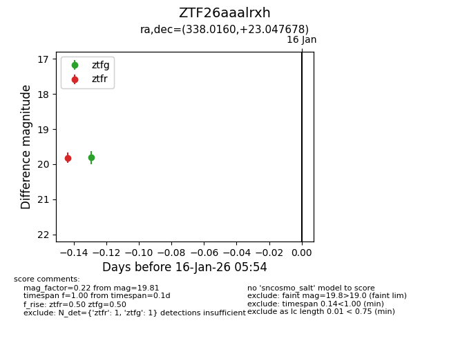
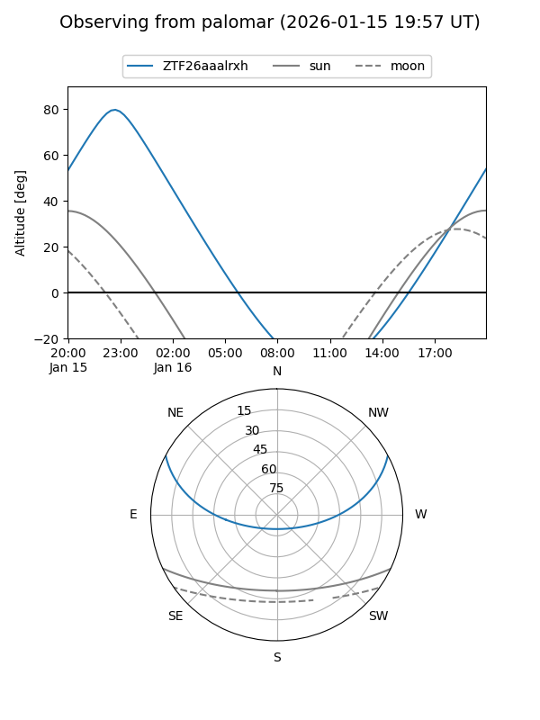

ZTF26aaalrxh
Target ZTF26aaalrxh at 2026-01-16 05:55
Aliases and brokers:
FINK: link
Lasair: link
ALeRCE: link
alt names
ZTF26aaalrxh (ztf,fink_ztf)
Coordinates:
equatorial (ra, dec) = 338.0160,+23.04768
equatorial (HMS+DMS) = 22:32:03.84,+23:02:51.64
galactic (l, b) = (85.7384,-29.57799)
Flags:
Photometry:
last ztfg=19.81, ztfr=19.81
1 ztfg, 1 ztfr detections
Lightcurve

Visibility


Additional plots